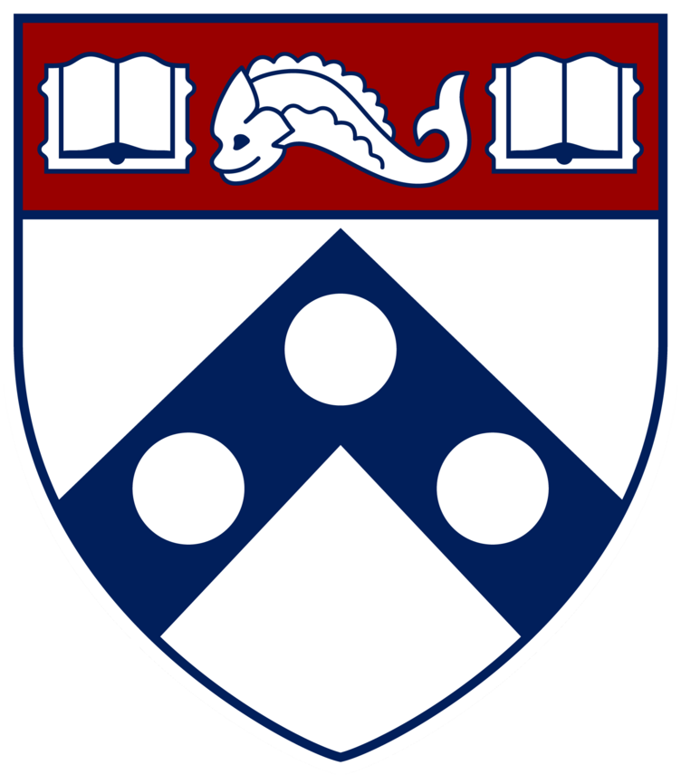

Researching multi-agent systems, world models, robot learning, and embodied AI.
Introduction
I am currently an M.S.E. student in Mechanical Engineering and Applied Mechanics at the University of Pennsylvania.
My research interests lie in multi-agent systems, world models, robot learning and perception.
I am broadly interested in learning predictive representations of the physical world
and leveraging them for embodied intelligence and robot control.
Education

University of PennsylvaniaM.S.E. in Mechanical Engineering and Applied MechanicsAccelerated Master’s Program with Shanghai Jiao Tong University (3+1+1)
Aug 2025 – Expected Jun 2027
Shanghai Jiao Tong UniversityB.S. in Mechanical Engineering
Is Forgetting Unified? Exploring Concept Unlearning in Unified Multimodal Models
Z. Xue, J. Chen, M. Lei, R. Zhang, Yixiao Liu, Z. Sun, S. Wu, Q. Liu, L. Zhang, L. Wang
Unified multimodal models can generate images and understand visual content, but forgetting a concept in one pathway does not necessarily remove it from the other. We introduce UUBench to evaluate cross-pathway concept unlearning and propose UniForget to jointly suppress target concepts while preserving other model capabilities.
An integrated wearable prototype with hand grasping, belt-driven wrist rotation, an actuator-driven elbow and STM32/IMU control. Outstanding Course Project Award.